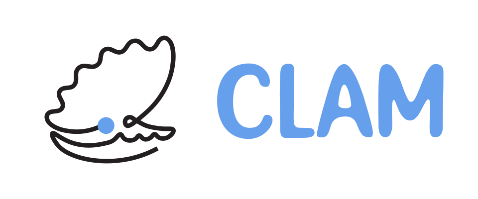

Home

The Computational Lagrangian Analysis and Modelling Community ("CLAM Community" or just "CLAM" for short) is a space where Lagrangian Modelling and Analysis enthusiasts can discuss their ongoing research, explore new collaborations, and shape future community projects. Most of our expertise is in Ocean science - but we'd love to have you as part of the community if you have different expertise!
Join us on Zulip Code of Conduct Calendar
What is Zulip?
Note
New to Zulip? The best way to discover it is just to have a
poke around the space! Introduce
yourself, message in the sandbox channel to test out
the messaging syntax, or read the "Getting Started" documentation.
Zulip is an online platform that we use for the CLAM Community. It is similar to Slack or Discord, but has the following benefits:
- Rich messaging syntax: Messaging on Zulip has support for LaTeX, code blocks, polls, and more.
- Feature rich: Zulip provides many integrations with other services, allowing us to easily set up video conferencing or integrate with 3rd party platforms like GitHub
- Value aligned: Zulip is open source software, and they have a generous cloud hosting option for academic communities. Zulip is also GDPR compliant.
Many communities such as Conda Forge and Jupyter are already on Zulip!
How is the CLAM Zulip structured?
The CLAM Zulip is structured into different channels, shown below in alphabetical order:
- announcements: Announcements that are important for the community. This is a read-only channel - if you want to post here message a member of the steering team!
- general: Scientific, or general conversation around Computational Lagrangian Analysis and Modelling. This is where the main discussion happens organised into Zulip topics.
- introductions: Send a message in this channel to introduce yourself. What are you working on? What is your affiliation? What are you excited about? Or even what is your favourite animal?
- code-...: These channels are used to discuss specific software projects related to Computational Lagrangian Analysis and Modelling.
- suggestion-box: Make suggestions about how we can improve this community. All suggestions welcome!
- sandbox: Experiment with Zulip here. 🧪 Send messages, test out formatting. We recommend to unsubscribe from this channels notifications.
- Zulip: Updates and notifications from Zulip.
There are also private channels used for the organisation of CLAM.
Governance
The organisation, direction and moderation of CLAM is done by the governance team - which is split into three roles:
- Steering Council: These individuals make decision with respect to the direction of the community. They also may moderate conversation in the community according to the community Code of Conduct.
- Moderators: These individuals moderate conversation in the community according to the community Code of Conduct.
- Project Representatives: These individuals are representatives for the respective projects shown below. They have full control over the channels related to their project.
Names in the teams are sorted alphabetically by first names.
Note
This community was formed in 2025 after the Parcels 10 Year event which made it clear there is a need for such an online space to facilitate our science. As a result, the current governance structure has many members of the Parcels team. We value diversity - we would love to have your input discussing ideas to improve the community (e.g., event suggestions, community structure). Our hope is that as this space matures that the governance structure can become more diverse so that we can promote a wider range of ideas, and be more representative of the community. We aim to raise this at the town hall at the Ocean Sciences Meeting in 2026.
Steering Council


Moderators
Software Project Representatives
The CLAM Zulip has "project" channels. These channels are used to discuss specific software projects related to Computational Lagrangian Analysis and Modelling. These channels act as good touch points for these projects with the community as a whole, while maintaining discussion boards in GitHub for more in-depth discussions and issue tracking.
These projects have representatives in the Zulip - they can be tagged using @PROJECT Representatives (e.g., @Parcels Representatives) in a message.
Projects are listed alphabetically.
OpenDrift


Parcels
TrajAn
Contributing
We have contributors of all types - from those who've contributed to the direction of the project, code, design, feedback, and more. See below our awesome contributors ✨
 Nick Hodgskin 🚣 💻 |
 Erik van Sebille 🚣 🖋 |
 Jimena Medina 🎨 |
 sruehs 🖋 |
 Reint 🖋 |
 Michael Denes 🖋 |
Acknowledgements
Zulip has also sponsored this community with a free standard plan - as they do for communities working in academia. See here for how you can use Zulip for research.